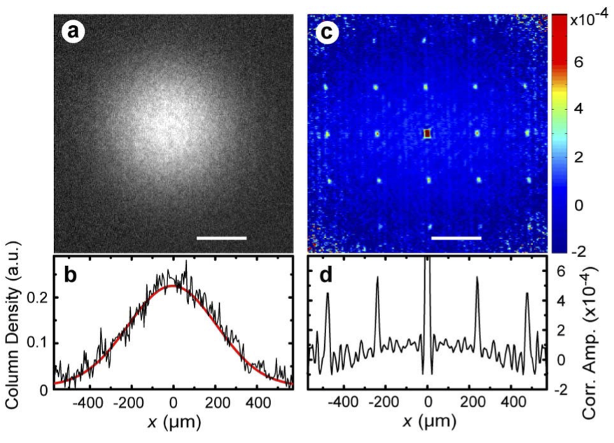

Problem Set 2
\[ \DeclareMathOperator{\tr}{tr} \DeclareMathOperator{\E}{\mathbb{E}} \]
1 \(N\) Particle Hong–Ou–Mandel
[TP2, 2015] Let’s reconsider the beam splitter discussed in Lecture 1.
\(a^\dagger_i\), \(a^{\vphantom{\dagger}}_i\) (\(i=1,2\)) create and destroy particles in the incoming states, and \(b^\dagger_i\), \(b^{\vphantom{\dagger}}_i\) do the same for the outgoing states. The creation operators are related by the \(S\)-matrix
\[ \begin{pmatrix} b^\dagger_1\\ b^\dagger_2 \end{pmatrix} = \frac{1}{\sqrt{2}} \begin{pmatrix} 1 & 1\\ 1 & -1 \end{pmatrix} \begin{pmatrix} a^\dagger_1\\ a^\dagger_2 \end{pmatrix}. \]
In the following parts, give all possible occupancies of outgoing states 1 and 2, and their probabilities. The statistics of the particles are given in square brackets. Note that the states are not necessarily normalized.
- The initial state is \(a^\dagger_1a^\dagger_2\lvert{\text{VAC}}\rangle\) [Fermions].
- The initial state is \(a^\dagger_1a^\dagger_2\lvert{\text{VAC}}\rangle\) [Bosons].
- The initial state is \((a^\dagger_1)^N(a^\dagger_2)^N\lvert{\text{VAC}}\rangle\) [Bosons].
- The initial state is \(\exp(\alpha_1a^\dagger_1+\alpha_2a^\dagger_2)\lvert{\text{VAC}}\rangle\) [Bosons].
How does the distribution in part 3 look? Try taking the limit of a large number of particles.
2 Equation of Motion for Density
Find the Heisenberg equation of motion of the density operator \(\rho(\mathbf{r})=\psi^\dagger(\mathbf{r})\psi^{\vphantom{\dagger}}(\mathbf{r})\) with the Hamiltonian
\[ H = \int \frac{1}{2m}\nabla\psi^\dagger\cdot\nabla\psi^{\vphantom{\dagger}}d\mathbf{r}. \]
Interpret the result. Is the result changed if we introduce an interaction of the form
\[ H_\text{int} = \frac{1}{2}\int d\mathbf{r}_1 d\mathbf{r}_2\, V(\mathbf{r}_1-\mathbf{r}_2)\psi^\dagger(\mathbf{r}_1)\psi^\dagger(\mathbf{r}_2)\psi^{\vphantom{\dagger}}(\mathbf{r}_2)\psi^{\vphantom{\dagger}}(\mathbf{r}_1)? \]
3 HBT Correlations From an Optical Lattice
In Fölling et al. (2005), bosonic atoms were initially prepared in an optical lattice in a Mott state:
\[ \lvert{\Psi}\rangle=\prod_{i} a^\dagger_{i}\lvert{\text{VAC}}\rangle, \]
where \(a^\dagger_{i}\) creates a particle localized at site \(\mathbf{r}_{i}\) in the lattice, with (let’s say) Gaussian wavefunction
\[ \varphi_{i}(\mathbf{r})=\frac{1}{\left(\pi R^{2}\right)^{3/4}}\exp\left[-\frac{\left(\mathbf{r}-\mathbf{r}_{i}\right)^2}{2R^2}\right] \]

Show that the correlation function of momentum state occupancies is
\[ \langle{\Psi}\rvert :N(\mathbf{p})N(\mathbf{p}'): \lvert \Psi \rangle=\sum_{i,j}\tilde\varphi^{*}_{i}(\mathbf{p})\tilde\varphi^{}_{i}(\mathbf{p})\tilde\varphi^{*}_{j}(\mathbf{p}')\tilde\varphi^{}_{j}(\mathbf{p}') +\tilde\varphi^{*}_{i}(\mathbf{p})\tilde\varphi^{}_{j}(\mathbf{p})\tilde\varphi^{*}_{j}(\mathbf{p}')\tilde\varphi^{}_{i}(\mathbf{p}'). \]
where \(\tilde\varphi_{i}(\mathbf{p})\) is the Fourier transform of the spatial wavefunction, and \(:(\cdots):\) denotes normal ordering of the operators between the colons. Evaluate the Fourier transform and explain the structure of the noise correlations in the above data.
4 Mean Field for Bose–Hubbard
For the Bose–Hubbard model, let’s try a variational wavefunction of the form
\[ \left[\prod_{i}\left(\sum_{n}c_{n}\frac{(a^\dagger_{i})^{n}}{\sqrt{n!}}\right) \right]|\text{VAC}\rangle\qquad \sum_{n}|c_{n}|^{2}=1 \]
The N\(^{\text{th}}\) Mott states has a fixed integer number of bosons per site i.e. \(c_{N}=1\) with all other coefficients zero. We identify the superfluid phase with the region where more than one \(c_n\) is nonzero, meaning that the bosons can move around.
Find the expectation value of \(\mathcal{H}_\mu = H-\mu N\) using the above wavefunction.
To find the boundary, use a self-consistent scheme. First assume that \(\langle a^{\vphantom{\dagger}}_{i}\rangle\) is small. Then use perturbation theory in this quantity to see how the \(c_{n}\) change to first order. Next calculate the value of \(\langle a^{\vphantom{\dagger}}_{i}\rangle\) that results. The gives an equation with \(\langle a^{\vphantom{\dagger}}_{i}\rangle\) on both sides, which can then be cancelled to give an equation determining the boundary between the phases. Plot the boundary as a function of \(t/U\) and \(\mu/U\). Does it agree with the boundaries found in the lectures when \(t/U\) is small?
5 Bose–Hubbard With Spin
Consider the Bose–Hubbard model with spin
\[ H = -t \sum_{\substack{\langle j\,k\rangle\\ s=\uparrow,\downarrow}} \left[a^\dagger_{j,s}a^{\vphantom{\dagger}}_{k,s}+a^\dagger_{k,s}a^{\vphantom{\dagger}}_{j,s}\right] + \frac{U}{2}\sum_j \mathsf{N}^{\vphantom{\dagger}}_j(\mathsf{N}^{\vphantom{\dagger}}_j-1), \]
where \(\mathsf{N}^{\vphantom{\dagger}}_j = \mathsf{N}^{\vphantom{\dagger}}_{j,\uparrow}+\mathsf{N}^{\vphantom{\dagger}}_{j,\downarrow}\). If we have a \(\nu=1\) Mott state, how does the behaviour at \(t/U\ll 1\) differ from the Fermi Hubbard case?
6 Bose Gas with Attractive Interactions
Consider the 1D Gross–Pitaevskii equation describing the attractive Lieb–Liniger model
\[ -\frac{1}{2m}\varphi'' - \mu \varphi - \frac{|c|}{2}\lvert{\varphi}\rvert^2\varphi = 0. \]
Look for a solution on the infinite line with \(\varphi(x\to\pm\infty) =0\) describing a localized ‘blob’ (properly called a bright soliton) containing \(N\) bosons. Find the energy of this state.
The ground state wavefunction is
\[ \Psi(x_1,\ldots,x_N) = \prod_{j<k}\exp\left(-\frac{\lvert{c}\rvert}{2}\lvert{x_j-x_k}\rvert\right),\quad x_1<x_2<\cdots <x_N. \]
Find the probability distribution of the separations \(x_{j+1}-x_j\) in this state. By equating the average density to the inverse of the mean separation, show that the resulting density profile coincides with that of the bright soliton.
7 Persistent Currents Without Rotational Symmetry
A system of bosons moving on a ring of radius \(R\) is described by the Hamiltonian \(H=H_1+H_2\), where
\[ H_1 = \int_0^{2\pi} \left[\frac{\hbar^2}{2mR^2}\frac{d\psi^\dagger}{d\theta}\frac{d\psi^{\vphantom{\dagger}}}{d\theta} +V(\theta)\psi^\dagger\psi^{\vphantom{\dagger}}\right]d\theta \]
is the single particle Hamiltonian, involving some potential \(V(\theta)\), and
\[ H_2=\frac{U_0}{2R}\int_0^{2\pi} \psi^\dagger\psi^\dagger\psi^{\vphantom{\dagger}}\psi^{\vphantom{\dagger}}\, d\theta \]
describes interactions between the particles. \(\psi^\dagger(\theta)\) and \(\psi^{\vphantom{\dagger}}(\theta)\) satisfy
\[ \begin{split} \left[\psi^{\vphantom{\dagger}}(\theta),\psi^\dagger(\theta')\right]=\delta(\theta-\theta')\\ \left[\psi^{\vphantom{\dagger}}(\theta),\psi^{\vphantom{\dagger}}(\theta')\right]=\left[\psi^\dagger(\theta),\psi^\dagger(\theta')\right]=0 \end{split} \]
In the basis of angular momentum eigenstates
\[ \varphi_l(\theta) =\frac{e^{il\theta}}{\sqrt{2\pi }},\qquad l=0,\pm 1, \pm 2,\ldots \]
\(\psi^{\vphantom{\dagger}}(\theta)\) may be expressed
\[ \psi^{\vphantom{\dagger}}(\theta)=\sum_{l=-\infty}^\infty \varphi_l(\theta)a_l, \]
where \(a_l\) annihilates a particle in state \(l\). By considering only states \(l=0\) and \(1\), show that the Hamiltonian takes the form
\[ \begin{align} H_{\text{rot}}=\text{const.}+\omega_c\left[a^\dagger_1a^{\vphantom{\dagger}}_1-a^\dagger_0a^{\vphantom{\dagger}}_0\right]+V_0\left[a^\dagger_0a^{\vphantom{\dagger}}_1+\mathrm{h.c.}\right]\nonumber\\ +\frac{U_0}{4\pi R}\left[a^\dagger_0a^\dagger_0a^{\vphantom{\dagger}}_0a^{\vphantom{\dagger}}_0+a^\dagger_1a^\dagger_1a^{\vphantom{\dagger}}_1a^{\vphantom{\dagger}}_1+4a^\dagger_1 a^\dagger_0a^{\vphantom{\dagger}}_0a^{\vphantom{\dagger}}_1\right] \end{align} \]
and identify \(\omega_{c}\) and \(V_{0}\).
Introduce the Gross–Pitaevskii wavefunction
\[ \left[\cos\frac{\chi}{2}e^{i\varphi/2}a^\dagger_0+\sin\frac{\chi}{2}e^{-i\varphi/2}a^\dagger_1\right]^N\lvert{\text{VAC}}\rangle, \]
and show that:
The order parameter has a node for \(\chi=\pi/2\). If \(V_0\) is due to a localized potential, this node will coincide with the position of that potential (by choosing \(\varphi\) appropriately).
The GP variational energy is (up to a constant, and ignoring terms lower order in \(N\))
\[ E(\chi)/N=-\omega_c\cos\chi+V_0\cos\varphi\sin\chi+\frac{nU_0}{4}\sin^2\chi, \]
where \(n=N/(2\pi R)\) is the density, while the angular momentum is
\[ L(\chi)/N=\frac{1}{2}\left(1-\cos\chi\right). \]
A metastable minimum exists for \(nU_0>V_0/2\) (assuming \(U_0\) and \(V _0\) are both much less than \(\omega_c\)). That is, for small enough deviations from perfect symmetry, metastable configurations are possible, and have their origin in the repulsive interactions. The point \(\chi=\pi/2\) that corresponds to an order parameter with a node is then a maximum of the energy.
Finally, consider what would happen for Fock states of the form
\[ \frac{1}{\sqrt{N_{0}!N_{1}!}}\left(a^\dagger_{0}\right)^{N_{0}}\left(a^\dagger_{1}\right)^{N_{1}}\lvert{\text{VAC}}\rangle. \]
This situation — macroscopic occupations of more than one single particle state — is sometimes called a fragmented condensate.
8 Perturbation Theory for the Bose gas
Find an expression for the ground state energy of the Bose gas at second order in the interaction, and confirm the ultraviolet divergence found in the lectures. This can be ‘cured’ by recognizing that a real potential has a finite range, which cuts off the integral.
[Harder]. The expression for the third order perturbative correction is
\[ E^{(3)}_{0} = \sum_{m,n\neq 0} \frac{\langle{0}\rvert H_{\text{int}} \lvert m \rangle\langle{m}\rvert H_{\text{int}} \lvert n \rangle\langle{n}\rvert H_{\text{int}} \lvert 0 \rangle}{\left(E^{(0)}_{m}-E^{(0)}_{0}\right)\left(E^{(0)}_{n}-E^{(0)}_{0}\right)}-\langle{0}\rvert H_{\text{int}} \lvert 0 \rangle\sum_{n\neq 0}\frac{|\langle{n}\rvert H_{\text{int}} \lvert 0 \rangle|^{2}}{\left(E^{(0)}_{0}-E^{(0)}_{n}\right)^{2}}. \]
Show that this expression contains an infrared divergence (i.e. at low momenta). This can’t be fixed by appealing to the interaction potential, and is the reason we need Bogoliubov theory! See Brueckner and Sawada (1957).
9 Bogoliubov as Unitary Transformation
Find an antihermitian generator \(A\) that generates a Bogoliubov transformation, i.e.
\[ \exp(A) a^{\vphantom{\dagger}}_{\mathbf{k}} \exp(-A)= \cosh\kappa_\mathbf{k}a^{\vphantom{\dagger}}_\mathbf{k}-\sinh\kappa_\mathbf{k}a^\dagger_{-\mathbf{k}}. \]
Hint: expand in \(\kappa_\mathbf{k}\). Compare the action of this transformation on the vacuum state with the form of the Bogoliubov transformation given in the lecture.
10 Condensate Depletion in One and Two Dimensions
Show that the condensate depletion in one dimension is logarithmically divergent in the length of the system, indicating a breakdown of Bogoliubov theory in the infinite length limit.
By assuming that the Bogoliubov modes have thermal occupations at finite temperature
\[ \langle\langle b^\dagger_\mathbf{p}b^{\vphantom{\dagger}}_\mathbf{p}\rangle\rangle = \frac{1}{\exp\left(\beta\omega(\mathbf{p})\right)-1}\equiv n_\text{B}(\omega(\mathbf{p})), \]
Show that the depletion is logarithmically divergent in the system size in two dimensions at finite temperature.